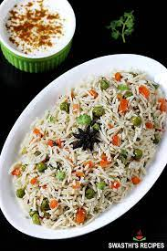

Pulav

About Pulav
Pulao is a rice dish, cooked in seasoned broth with rice, meat, and an array of spices including: coriander seeds, cumin, cardamom, cloves and others.
Ingredients
- Rice
- Mint Leaves
- Cardamom
- Clove
- Green Peas
- Onion
- Cashew
Steps
- Wash rice and soak it in water for 15-20 minutes. Drain and keep aside until needed.
- Heat ghee and oil together in a pressure cooker (2-liter capacity, stainless steel cooker) on low flame. Add bay leaf, cinnamon, clove, and sauté for 30 seconds. Add onion and sauté until it turns light brown or for approx. 2 minutes.
- Add chopped tomato, green peas, french beans and carrot.
- Stir-fry them for approx. 2 minutes.
- Add soaked (drained) rice, garam masala powder, turmeric powder, red chilli powder and salt.
- Stir-fry them for approx. 2 minutes.
- Close the lid and cook over medium flame for 2 whistles. When 1st whistle is completed, reduce the flame to low and cook until another whistle. Turn off flame.
- Let it cool at room temperature until pressure inside cooker comes down naturally. Open the lid carefully and fluff the rice with a fork. Transfer it to a serving bowl and garnish with fresh coriander leaves.